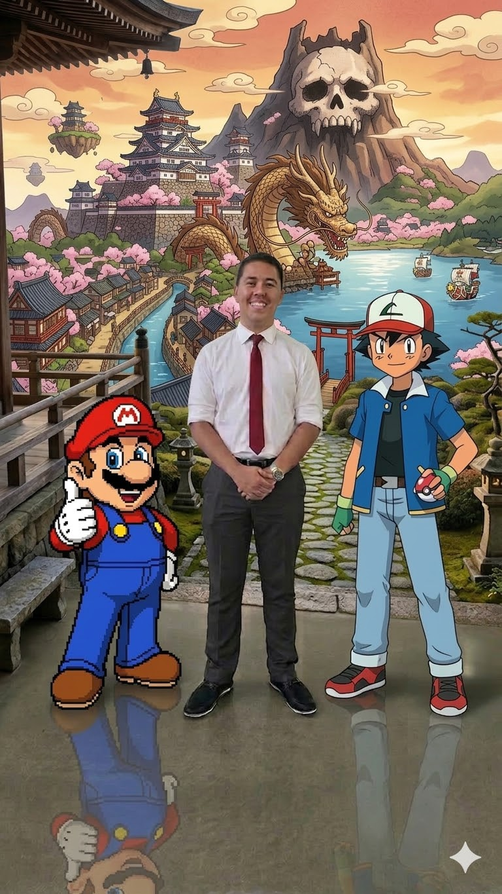
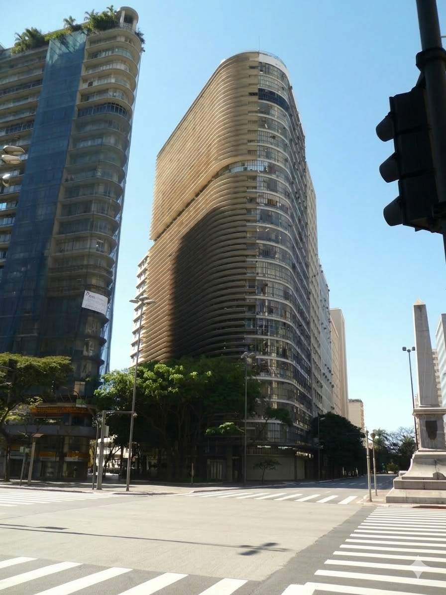

Eu sou Markos, estudante da área de Desenvolvimento de Sistemas e apaixonado por tecnologia, conhecimento e novas experiências. Criei este site como parte de um projeto acadêmico e também como uma forma de compartilhar inspiração.
Meu objetivo é incentivar as pessoas a acreditarem em seus sonhos e buscarem aquilo que desejam conquistar, seja viajar para o Japão ou alcançar qualquer meta importante em suas vidas. Aqui você encontrará informações e dicas que podem ajudar nesse caminho.

Muitas pessoas sonham em conhecer o Japão, mas não sabem por onde começar. Nosso site foi criado para inspirar e incentivar novos viajantes.
Reunimos informações úteis, opções de voos e conteúdos importantes para ajudar no planejamento da viagem de forma simples.
Além da viagem, queremos apresentar um pouco da cultura japonesa, tradições e curiosidades que tornam o Japão um destino único.

O SENAI CTTI-MG é uma instituição referência na formação de profissionais na área de tecnologia da informação e inovação.
Localizado em Minas Gerais, o centro oferece cursos técnicos e programas de formação voltados para desenvolvimento de software, redes, segurança da informação e diversas áreas tecnológicas.
Este projeto foi desenvolvido como parte de uma atividade acadêmica, aplicando conhecimentos de programação web, design e desenvolvimento de sistemas.